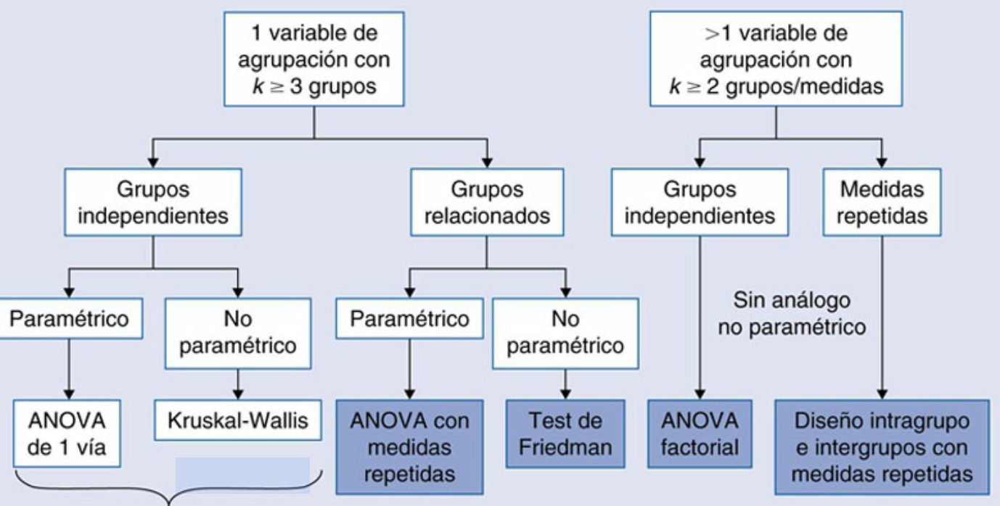
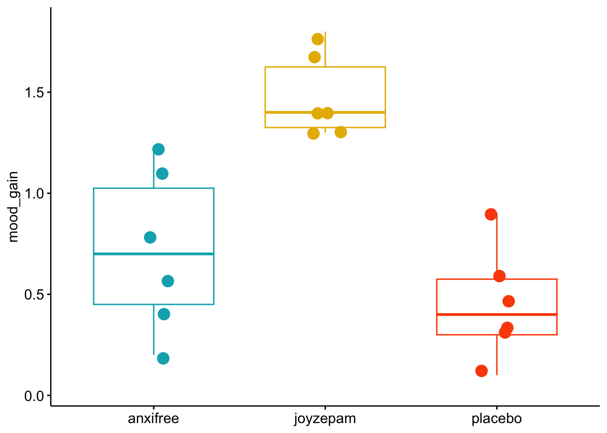
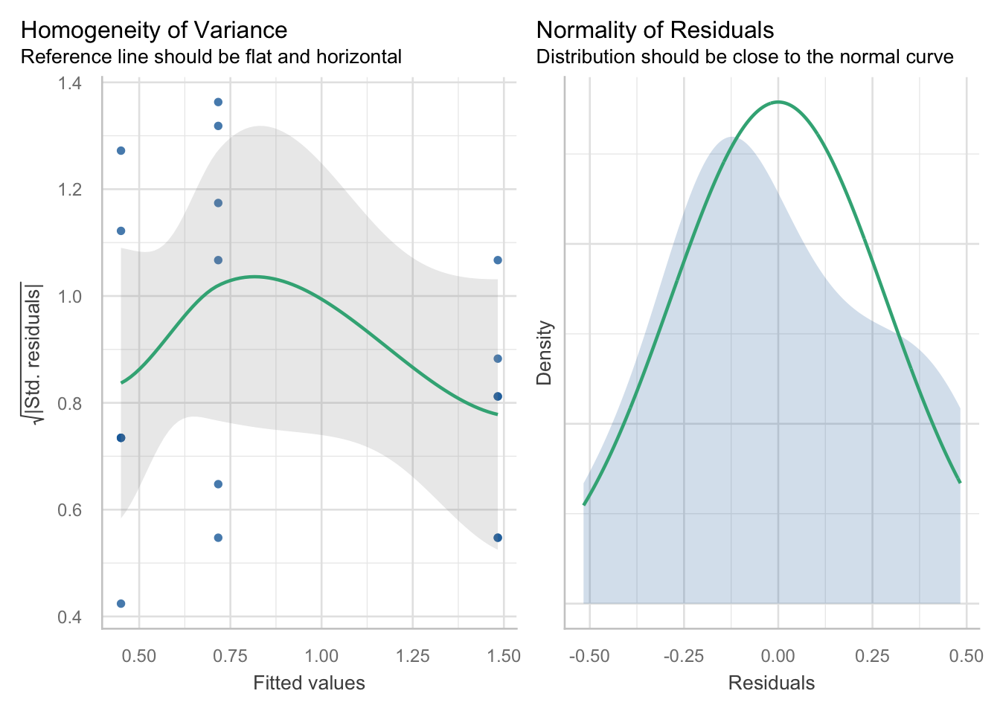
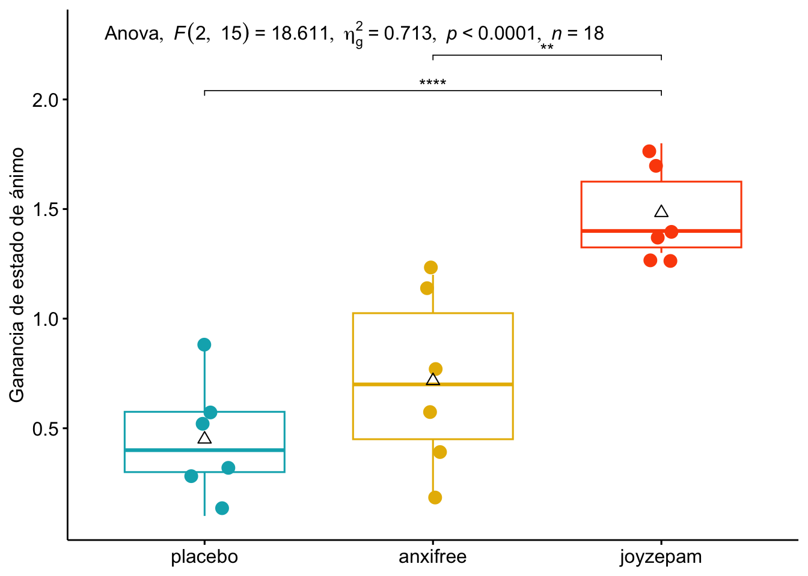
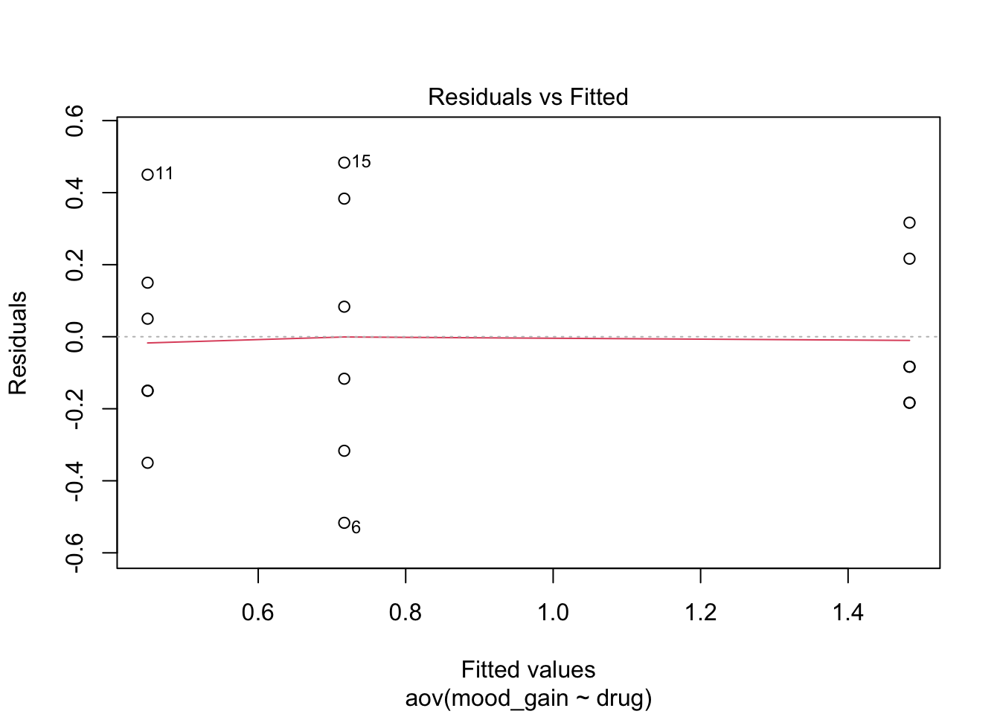
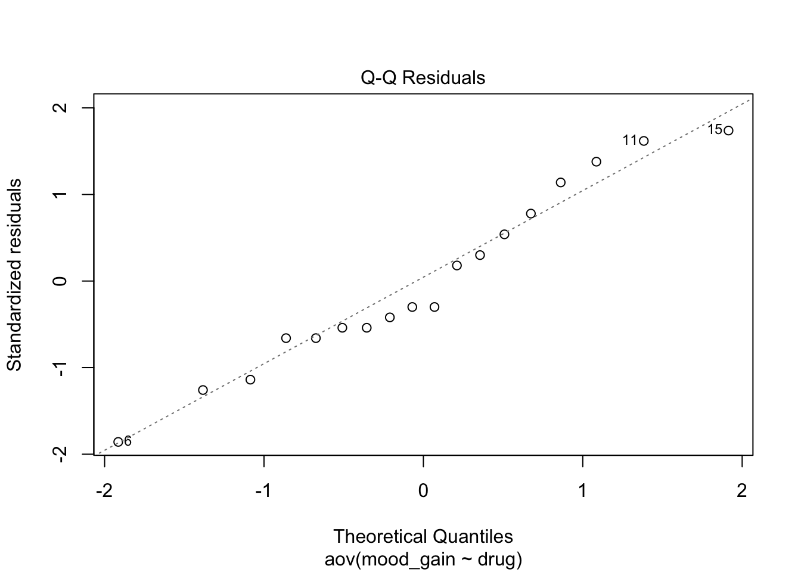
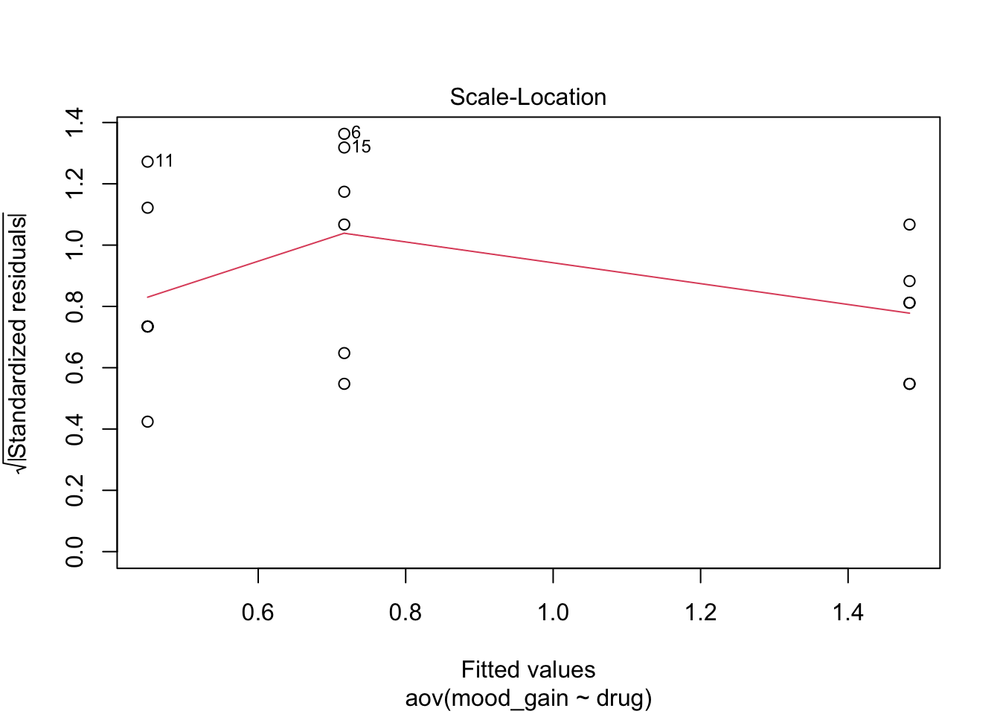
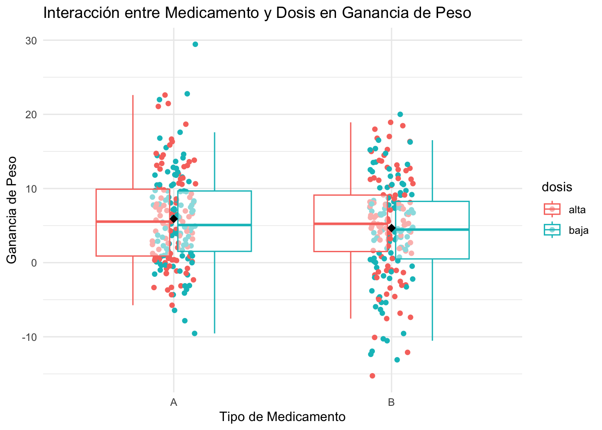
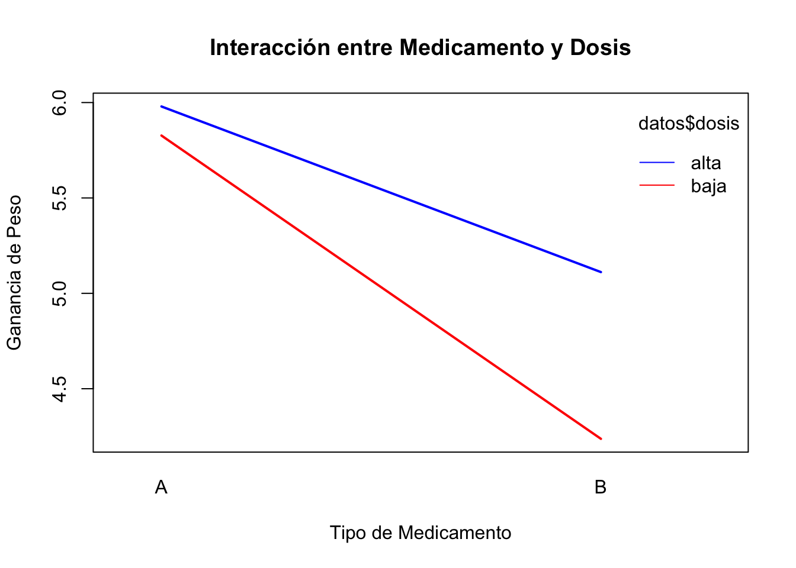
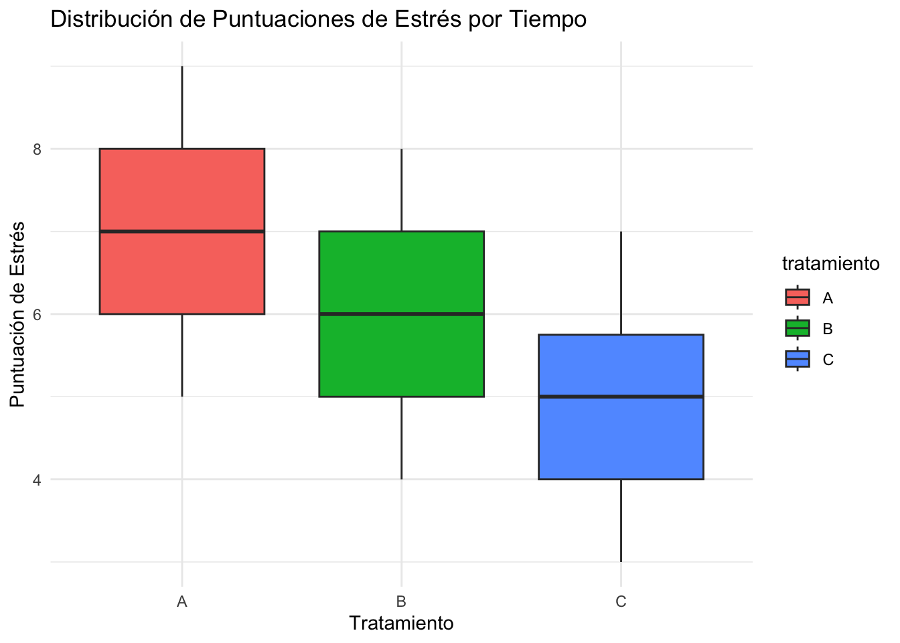

| Fuente de Variación | SS | Df | MS | F | Pvalor |
|---|---|---|---|---|---|
| Entre Grupos (Between) | $$SS_{B} = \sum_{i=1}^{k} n_i (\bar{y_i} - \bar{\bar{y}})^2$$ | $$Df_{1} = k - 1$$ | $$MS_{B} = \frac{SS_{B}}{Df_{1}}$$ | $$F = \frac{MS_{B}}{MS_{W}}$$ | $$F>F_{critica}$$ |
| Dentro de Grupos (Within/Error) | $$SS_{W} = \sum_{i=1}^{k}\sum_{j=1}^{n_i} (y_{ij} - \bar{y_i})^2$$ | $$Df_{2} = N - k$$ | $$MS_{W} = \frac{SS_{W}}{Df_{2}}$$ | ||
| Total | $$SS_{Total} = \sum_{i=1}^{k}\sum_{j=1}^{n_i} (y_{ij} - \bar{\bar{y}})^2$$ | $$Df_{Total} = N - 1$$ |
2 TEMA 2: ANÁLISIS DE LA VARIANZA
Cuando hayamos terminado este Capítulo, deberíamos ser capaces de:
- Entender el propósito y los fundamentos del ANOVA.
- Interpretar una tabla ANOVA.
- Conocer los diferentes tipos de ANOVA y sus aplicaciones en salud.
- Realizar un ANOVA de un factor en R.
- Realizar comparaciones post-hoc.
- Calcular e interpretar el tamaño del efecto en ANOVA.2.1 Introducción al ANOVA
El Análisis de Varianza (ANOVA) es una prueba estadística fundamental en las ciencias de la salud para comparar las medias de tres o más grupos. En lugar de realizar múltiples pruebas t de Student, que aumentan el riesgo de errores de Tipo I (falsos positivos), el ANOVA evalúa si existe una diferencia significativa general entre los grupos en una sola prueba. El contenido de este tema está basado en el uso del software JAMOVI https://www.jamovi.org/ y tutoriales estadísticos de JAMOVI [1].
El principio básico del ANOVA es descomponer la variabilidad total de los datos en dos componentes:
- Variabilidad entre grupos: La varianza explicada por las diferencias entre las medias de los grupos.
- Variabilidad dentro de los grupos: La varianza residual o aleatoria que existe dentro de cada grupo (debida al azar).
El estadístico F del ANOVA es la relación entre estas dos varianzas. Un valor F grande con un p-valor bajo sugiere que la variabilidad entre los grupos es significativamente mayor que la variabilidad dentro de ellos, lo que indica que al menos una de las medias de los grupos es diferente [2]. Esta descomposición de varianzas del test de ANOVA se presenta generalmente en una tabla, que explicaremos en detalle y la estimaremos con la función summary(aov()) en R.
En función del diseño del experimento o la pregunta del investigador y sus aplicaciones en salud, exiten diferentes tipos de ANOVA:
| Tipo de ANOVA | Descripción | Ejemplo de aplicación en salud |
|---|---|---|
| ANOVA de un factor (One-way ANOVA) | Compara las medias de tres o más grupos independientes con una sola variable independiente (factor). | Comparar el efecto de tres dietas diferentes (dieta A, dieta B, dieta C) sobre la pérdida de peso. |
| ANOVA de dos factores (Two-way ANOVA) | Evalúa el efecto de dos variables independientes sobre una variable dependiente. Permite analizar el efecto de cada factor por separado y la interacción entre ambos. | Estudiar el efecto de un medicamento (dosis alta vs. dosis baja) y el género (masculino vs. femenino) en la presión arterial. |
| ANOVA de medidas repetidas (Repeated Measures ANOVA) | Se utiliza cuando se mide a los mismos sujetos en tres o más ocasiones o condiciones. Es una extensión de la prueba t de muestras pareadas. | Medir los niveles de glucosa en sangre de un grupo de pacientes antes, durante y después de un tratamiento. |
Fuente: Martínez-González MÁ et al. Bioestadística amigable. 4th ed. Madrid, Spain: Elsevier; 2020.[3]
2.1.1 Condiciones generales de aplicabilidad del test ANOVA
Para que los resultados del ANOVA sean válidos, deben cumplirse ciertas suposiciones:
- Independencia de las observaciones: Las mediciones de un sujeto no deben influir en las de otro. Esto se garantiza con un diseño experimental adecuado, como la asignación aleatoria.
- Normalidad: Los datos de la variable dependiente (generalmente cuantitativa) dentro de cada grupo deben seguir una distribución aproximadamente normal.
- Homogeneidad de varianzas (Homocedasticidad): La varianza de los datos debe ser similar en todos los grupos.
Si no se cumplen estas suposiciones, especialmente la normalidad, se puede recurrir a alternativas no paramétricas como el test de Kruskal-Wallis [4].
2.1.2 Explicación de los componentes de la tabla ANOVA
La tabla ANOVA es una herramienta clave para resumir los resultados del análisis de varianza. Aquí tienes un ejemplo de cómo se vería una tabla ANOVA típica:
Leyenda:
\(k\): Número de grupos.
\(N\): Número total de observaciones.
\(\bar{y_i}\): Media del grupo \(i\).
\(\bar{\bar{y}}\): Media general.
\(y_{ij}\): Observación \(j\) en el grupo \(i\).
A continuación, se explica cada componente de la tabla ANOVA:
Fuentes de Variación
1. Entre Grupos (Between Groups): Representa la variabilidad que existe entre las medias de los diferentes grupos que estás comparando. Si esta variabilidad es grande, es probable que los grupos sean significativamente diferentes.
2. Dentro de Grupos (Within Groups):
Representa la variabilidad que existe dentro de cada grupo individual. Es la variabilidad “aleatoria” o no explicada por el tratamiento o factor de interés.
3. Total: Es la suma de la variabilidad entre y dentro de los grupos, representando la variabilidad total de todos los datos.
Suma de Cuadrados (SS)
1. Suma de Cuadrados Entre Grupos (\(SS_{Between}\)): Mide la variabilidad entre las medias de los grupos.
2. Suma de Cuadrados Dentro de Grupos (\(SS_{Within}\)): Mide la variabilidad dentro de cada grupo.
3. Suma de Cuadrados Total (\(SS_{Total}\)): La suma de las dos anteriores (\(SS_{Total} = SS_{Between} + SS_{Within}\)).
Grados de Libertad (Df)
1. Entre Grupos (Df1): Es el número de grupos menos 1. Si tienes 3 grupos, Df1 será 2. \(Df_{1} = k - 1\) (donde \(k\) es el número de grupos)
2. Dentro de Grupos (Df2): Es el número total de observaciones menos el número de grupos. Si tienes 3 grupos y 18 observaciones en total, Df2 será 15 (\(18-3=15\)). \(Df_{2} = N - k\) (donde \(N\) es el número total de observaciones y \(k\) es el número de grupos)
3. Total (Df_Total): Es el número total de observaciones menos 1. \(Df_{Total} = N - 1\)
Media de Cuadrados (MS)
La Media de Cuadrados es la Suma de Cuadrados dividida por sus grados de libertad. Representa una estimación de la varianza.
- Media de Cuadrados Entre Grupos (\(MS_{Between}\)): \(MS_{Between} = SS_{Between} / Df_{1}\)
- Media de Cuadrados Dentro de Grupos (\(MS_{Within}\)): \(MS_{Within} = SS_{Within} / Df_{2}\)
Estadístico F
El estadístico F es el corazón del ANOVA. Es una razón que compara la variabilidad entre los grupos con la variabilidad dentro de ellos.
\(F = MS_{Between} / MS_{Within}\)
Un valor F grande sugiere que la variabilidad entre los grupos es mucho mayor que la variabilidad aleatoria dentro de ellos, lo que apoya la idea de que las medias de los grupos son realmente diferentes. El valor de F se compara con un valor crítico de la distribución F para determinar la significación estadística.
P-valor: (Pr(>F))
El p-valor es la probabilidad de observar un valor F tan extremo o más extremo que el calculado, si la hipótesis nula fuera verdadera. Se obtiene de la distribución F con \(Df1\) y \(Df2\) grados de libertad. \[P = P(F_{Df1, Df2} > F_{crítico})\] Si p-valor \(<\alpha\) (nivel de significación, generalmente 0.05), se rechaza la hipótesis nula y concluyes que hay una diferencia estadísticamente significativa entre las medias de al menos dos de los grupos. Si el p-valor >0.05, no se tiene suficiente evidencia ara rechazar la H0, lo que significa que las diferencias observadas entre las medias podrían deberse simplemente al azar.
Eta cuadrada generalizada
Eta (\(\eta_G^2\)) es una medida del tamaño del efecto en el análisis de varianza (ANOVA). Su objetivo es cuantificar la proporción de la varianza total en la variable dependiente que puede ser explicada por un factor (variable independiente), independientemente del diseño de la investigación. A diferencia de la eta cuadrada (\(\eta^2\)) y la eta cuadrada parcial (\(\eta_p^2\)), la eta cuadrada generalizada está diseñada para ser comparable entre diferentes tipos de estudios. Por esta razón, se considera una medida más robusta y es la preferida en muchos campos de investigación. La eta cuadrada (\(\eta^2\)) y la eta cuadrada parcial (\(\eta_p^2\)), aunque útiles, tienen una limitación importante: sus valores pueden ser influenciados por el diseño del estudio. El valor de la eta cuadrada generalizada va de 0 a 1. Cuanto más cerca esté el valor de 1, mayor es la proporción de la varianza de la variable dependiente que es explicada por el factor.
Valores típicos de referencia (guía, no reglas estrictas):
Pequeño: \(\eta_G^2 = 0.01\)
Mediano: \(\eta_G^2 = 0.06\)
Grande: \(\eta_G^2 = 0.14\)
En la práctica, reportar la \(\eta_G^2\) junto con el p-valor del ANOVA proporciona una imagen completa: así el p-valor te dice si un efecto es estadísticamente significativo, mientras que el tamaño del efecto (\(\eta_G^2\)) te dice cuán importante o sustancial es ese efecto en la práctica.
2.2 ANOVA de un factor o una sola vía en R (ONEWAY ANOVA)
2.2.1 Computación e interpretación del resultado
El análisis de varianza (ANOVA) es una técnica estadística popular para comparar resultados entre múltiples grupos, pero utilizarla eficazmente en R puede ser abrumador debido a la multitud de funciones y opciones disponibles. En esta práctica pretendemos motrar las herramientas esenciales y los flujos de trabajo para realizar ANOVA (de un factor) en R, desde la codificación, hasta la visualización, y la elaboración de informes.
Los pasos genéricos a seguir para su realización de un ANOVA son los siguientes:
- Realizar el ANOVA: Si el valor p es menor que 0.05, se rechaza la hipótesis nula de que todas las medias son iguales. Esto significa que hay una diferencia significativa entre al menos dos grupos.
- Realizar comparaciones post-hoc: Si el ANOVA es significativo, se necesitan pruebas post-hoc (como la prueba de Tukey) para determinar qué grupos específicos son diferentes entre sí. El ANOVA solo indica que “hay una diferencia”, no dónde está.
- Calcular e interpretar el tamaño del efecto: Medidas como la eta cuadrada generalizada (\(\eta_G^2\)) o el omega cuadrado (\(\omega^2\)) indican la magnitud del efecto de la variable independiente. Esto es crucial para entender la importancia clínica del hallazgo, más allá de la significación estadística.
Los siguientes pasos ayudan a implementar practicamente un ANOVA de un factor en R.
pacman::p_load(tidyverse, ggpubr, rstatix, emmeans, performance)Primero, debemos obtener los datos de un ejemplo basado en un escenario hipotético, donde tenemos un ensayo clínico con 18 participantes que han asignados aleatoriamente a uno de tres grupos de medicamentos: placebo, anxifree o joyzepam.
El objetivo del ensayo era determinar si alguno de los dos medicamentos podía mejorar el estado de ánimo en comparación con el placebo. Cada grupo estaba compuesto por seis participantes y el resultado principal fue el cambio en el estado de ánimo a lo largo del ensayo
data <- tibble::tribble(
~id, ~drug, ~cbt, ~mood_gain,
1L, "placebo", "no.therapy", 0.5,
2L, "placebo", "no.therapy", 0.3,
3L, "placebo", "no.therapy", 0.1,
4L, "anxifree", "no.therapy", 0.6,
5L, "anxifree", "no.therapy", 0.4,
6L, "anxifree", "no.therapy", 0.2,
7L, "joyzepam", "no.therapy", 1.4,
8L, "joyzepam", "no.therapy", 1.7,
9L, "joyzepam", "no.therapy", 1.3,
10L, "placebo", "CBT", 0.6,
11L, "placebo", "CBT", 0.9,
12L, "placebo", "CBT", 0.3,
13L, "anxifree", "CBT", 1.1,
14L, "anxifree", "CBT", 0.8,
15L, "anxifree", "CBT", 1.2,
16L, "joyzepam", "CBT", 1.8,
17L, "joyzepam", "CBT", 1.3,
18L, "joyzepam", "CBT", 1.4
) %>%
mutate(across(c(id, drug, cbt), as.factor)) %>%
select(-cbt)Ahora, echemos un vistazo rápido a los datos:
data %>%
flextable::flextable() %>%
flextable::autofit()id | drug | mood_gain |
|---|---|---|
1 | placebo | 0.5 |
2 | placebo | 0.3 |
3 | placebo | 0.1 |
4 | anxifree | 0.6 |
5 | anxifree | 0.4 |
6 | anxifree | 0.2 |
7 | joyzepam | 1.4 |
8 | joyzepam | 1.7 |
9 | joyzepam | 1.3 |
10 | placebo | 0.6 |
11 | placebo | 0.9 |
12 | placebo | 0.3 |
13 | anxifree | 1.1 |
14 | anxifree | 0.8 |
15 | anxifree | 1.2 |
16 | joyzepam | 1.8 |
17 | joyzepam | 1.3 |
18 | joyzepam | 1.4 |
Visualizamos los datos: Gráficos de cajas y bigotes usando la función ggboxplot() del paquete ggpubr:
data %>%
ggpubr::ggboxplot(
y = "mood_gain",
x = "drug",
color = "drug",
add = c("dotplot"),
add.params = list(
position = position_jitter(w = 0.09, h = 0.04)
),
palette = c("#00AFBB", "#E7B800", "#FC4E07")
) +
theme(
legend.position = "none",
axis.title.x = element_blank()
)Bin width defaults to 1/30 of the range of the data. Pick better value with
`binwidth`.
# Describir los datos
summary(data) id drug mood_gain
1 : 1 anxifree:6 Min. :0.1000
2 : 1 joyzepam:6 1st Qu.:0.4250
3 : 1 placebo :6 Median :0.8500
4 : 1 Mean :0.8833
5 : 1 3rd Qu.:1.3000
6 : 1 Max. :1.8000
(Other):12 # Medias por grupo
library(dplyr)
attach(data)
data %>%
group_by(drug) %>%
summarise(media = mean(mood_gain), sd = sd(mood_gain))# A tibble: 3 × 3
drug media sd
<fct> <dbl> <dbl>
1 anxifree 0.717 0.392
2 joyzepam 1.48 0.214
3 placebo 0.45 0.281De inmediato, podemos ver que parece haber una diferencia entre los grupos de medicamentos, con joyzepam mostrando una ganancia de estado de ánimo promedio más alta que anxifree y el placebo. Sin embargo, si bien una diferencia bruta entre grupos proporciona una idea de la magnitud de un efecto, necesitamos estadísticas que nos ayuden a determinar si es probable que la diferencia represente un efecto real en lugar de solo una variación aleatoria. Para evaluar si las diferencias observadas entre los tres grupos de tratamiento son estadísticamente significativas, realizaremos un ANOVA de un factor.
Par calcular el ANOVA (de un factor) en R usamos el paquete rstatix con la función rstatix::anova_test [5]:
rstatixaov <-
data %>%
rstatix::anova_test(dv = mood_gain, between = drug, wid = id)
rstatixaovANOVA Table (type II tests)
Effect DFn DFd F p p<.05 ges
1 drug 2 15 18.611 8.65e-05 * 0.713Mejoramos la salida de resultados como sigue:
rstatixaov %>%
tibble::as_tibble() %>%
mutate(p = ifelse(p < 0.001, "< .001", signif(p, 2))) %>%
mutate(across(where(is.numeric), round, 2)) %>%
select(-`p<.05`) %>%
flextable::flextable() %>%
flextable::autofit()Effect | DFn | DFd | F | p | ges |
|---|---|---|---|---|---|
drug | 2 | 15 | 18.61 | < .001 | 0.71 |
Los resultados revelan un efecto estadísticamente significativo de los tratamientos farmacológicos en el cambio de estado de ánimo. El pequeño valor p (<0.001) indica que es muy poco probable (<0.1 % de probabilidad) obtener estos resultados si los medicamentos no tuvieran un efecto real. Además, el elevado valor de eta cuadrada generalizada (\(\eta_G^{2}\) = 0.71) sugiere que los tratamientos farmacológicos representaron el 71 % de la varianza en las puntuaciones de estado de ánimo. Este gran tamaño del efecto proporciona evidencia de que los medicamentos impactaron sustancialmente el estado de ánimo. Si bien el análisis general proporciona evidencia del efecto del medicamento, todavía no sabemos qué tratamientos farmacológicos específicos condujeron a una ganancia de estado de ánimo superior en comparación con otros. Nuestra visualización anterior nos da algunas pistas, pero para explorarlo formalmente, necesitamos realizar comparaciones a posterior por pares post-hoc análisis.
2.2.2 Comparaciones post-hoc: Family Wise Error
Las comparaciones post-hoc son pruebas estadísticas realizadas para determinar qué pares específicos de grupos de medicamentos difieren significativamente entre sí, al tiempo que se garantiza que el riesgo general de falsos positivos siga siendo bajo. Cuando un ANOVA de una vía da un resultado significativo, solo te dice que existe al menos una diferencia entre las medias de los grupos, pero no te dice cuáles grupos son diferentes. Para saberlo, se realizan pruebas de comparación múltiple. El problema es que cada prueba individual aumenta la probabilidad de cometer un error de Tipo I, un fenómeno conocido como tasa de error familiar y en inglés (Family Wise Error: FWER).
La FWER es la probabilidad de cometer al menos un error de tipo I (falso positivo) en una serie o “familia” de pruebas de hipótesis. Cuando se realiza una sola prueba de hipótesis, el riesgo de cometer un error de tipo I está controlado por tu nivel de significación, \(\alpha\) (por ejemplo, \(\alpha = 0.05\)). Sin embargo, cuando realizas múltiples comparaciones (como en un análisis post-hoc después de un ANOVA), el riesgo de cometer al menos un error de tipo I aumenta con cada prueba adicional. Por lo tanto si realizamos 20 pruebas de hipótesis con un \(\alpha\) de 0.05 y todas las hipótesis nulas son verdaderas, la probabilidad de no cometer un solo error de tipo I es \((1 - 0.05)^{20} \approx 0.358\). Esto significa que la probabilidad de cometer al menos un error de tipo I es \(1 - 0.358 = 0.642\), lo que es inaceptablemente alto. Para controlar la FWER, se aplican ajustes a los valores p o al nivel de significación. Los métodos más comunes son:
2.2.2.1 Corrección de Bonferroni
Es el método más simple y conservador. Divide el nivel de significación original (\(\alpha\)) entre el número de comparaciones (\(m\)). \[\alpha_{ajustado} = \frac{\alpha}{m}\]
Si el p-valor de una prueba es menor que este nuevo \(\alpha_{ajustado}\), se considera significativo.
De igual forma, si en lugar de \(\alpha_{ajustado}\) usamos como criterio el p-valor, este se puede multiplicar por el número de comparaciones:\(\text{p-valor\ ajustado}=\text{p-valor\ original}\times K\), donde K es el número de comparaciones, para corregir la significacion.
La prueba de Bonferroni es un método muy simple y fácil de entender: ajusta el nivel de significación (\(\alpha\)) dividiéndolo por el número de comparaciones que se van a realizar [6].
- Cuándo usarla:
- Cuando tienes un número reducido de comparaciones planeadas (por ejemplo, solo quieres comparar un grupo de tratamiento con el grupo de control).
- Es útil para un control estricto del error de Tipo I, pero puede ser demasiado conservadora y aumentar el riesgo de errores de Tipo II (falsos negativos).
2.2.2.2 Holm-Bonferroni
Procedimiento de Holm-Bonferroni: Es una mejora de la corrección de Bonferroni. Es menos conservador y, por lo tanto, más potente. Ajusta los p-valores de manera secuencial.
1. Se ordenan los p-valores de menor a mayor.
2. Cada p-valor se compara con un \(\alpha\) ajustado, que aumenta secuencialmente.
3. El proceso se detiene en la primera prueba que no es significativa, y ninguna de las pruebas restantes se considera significativa.
La prueba de Bonferroni es un método muy simple y fácil de entender: ajusta el nivel de significación (\(\alpha\)) dividiéndolo por el número de comparaciones que se van a realizar [6].
- Cuándo usarla:
- Cuando tienes un número reducido de comparaciones planeadas (por ejemplo, solo quieres comparar un grupo de tratamiento con el grupo de control).
- Es útil para un control estricto del error de Tipo I, pero puede ser demasiado conservadora y aumentar el riesgo de errores de Tipo II (falsos negativos).
2.2.2.3 Sidak
Contraste de Sidak es un método para controlar la Tasa de Error Familiar (FWER). Se utiliza cuando se realizan múltiples pruebas de hipótesis para reducir la probabilidad de cometer al menos un error de Tipo I (un falso positivo) en el conjunto de todas las pruebas. El método de Sidak es una alternativa menos conservadora y, por lo tanto, más potente que la corrección de Bonferroni. El método de Sidak se basa en el supuesto de que las múltiples pruebas de hipótesis son estadísticamente independientes. Si esta suposición se cumple, la probabilidad de cometer al menos un error de Tipo I se puede calcular de manera más precisa que con el método de Bonferroni. El método ajusta el nivel de significación (\(\alpha\)) para cada prueba individual a un nuevo valor más pequeño (\(\alpha_{Sidak}\)) para asegurar que la FWER general se mantenga en el nivel deseado.
La fórmula para el \(\alpha\) ajustado de Sidak es: \[\alpha_{Sidak} = 1 - (1 - \alpha)^{1/m}\] donde: * \(\alpha\) es la FWER deseada (por ejemplo, 0.05). * \(m\) es el número total de comparaciones.
Para cada prueba individual, si su valor p es menor que \(\alpha_{Sidak}\), se rechaza la hipótesis nula.
Sidak vs. Bonferroni La corrección de Bonferroni es un método más simple y conservador. Se deriva de una desigualdad matemática y no requiere la suposición de independencia. Su fórmula para el \(\alpha\) ajustado es: \[\alpha_{Bonferroni} = \frac{\alpha}{m}\]
Debido a que el método de Sidak se basa en un cálculo de probabilidad más preciso, su \(\alpha\) ajustado es ligeramente mayor que el de Bonferroni, lo que le otorga mayor potencia estadística (menor probabilidad de pasar por alto un efecto real) mientras sigue controlando la FWER.
| Característica | Corrección de Sidak | Corrección de Bonferroni |
|---|---|---|
| Fórmula | \(1 - (1 - \alpha)^{1/m}\) | \(\alpha/m\) |
| Supuesto | Requiere que las pruebas sean independientes | No requiere un supuesto de independencia |
| Conservadurismo | Menos conservador | Muy conservador |
| Potencia Estadística | Mayor | Menor |
En la práctica, la diferencia entre ambos métodos es mínima para un número pequeño de comparaciones. Sin embargo, el método de Sidak es teóricamente superior cuando se cumple el supuesto de independencia. Para un enfoque secuencial aún más potente, a menudo se prefiere el método de Holm-Bonferroni.
2.2.2.4 Tukey
Test de Tukey (HSD) El test de Tukey, también conocido como la Diferencia Honestamente Significativa (HSD), es el método preferido cuando el objetivo es comparar todos los pares de medias de grupo. Es muy potente para este tipo de comparaciones y se basa en la distribución del rango studentizado. La prueba de Tukey (Honest Significant Difference) es una de las más utilizadas y recomendadas siempre que el tamaño de los grupos sea homogeneo. Es una prueba conservadora que controla la tasa de error familiar (la probabilidad de cometer al menos un error de Tipo I en todas las comparaciones) de manera efectiva, lo que la hace ideal para la mayoría de las situaciones [7].
Cuándo usarla: * Cuando se cumplen los supuestos del ANOVA (normalidad de los residuos y homogeneidad de las varianzas).
* Cuando quieres comparar todos los pares posibles de grupos.
* Para estudios con un tamaño de muestra similar en todos los grupos.
Ideal para: Comparaciones por pares. Potencia: Es más potente que el test de Scheffé cuando solo se comparan pares. Flexibilidad: Está diseñado específicamente para comparaciones de dos en dos. Si los tamaños de muestra son desiguales, se utiliza una versión modificada llamada Tukey-Kramer. Supuesto: Requiere que la varianza sea homogénea.
2.2.2.5 Test de Scheffé
Test de Scheffé El test de Scheffé es un método más flexible y conservador. Es el único test que puede controlar la FWER para todas las comparaciones posibles, no solo las de pares. Permite realizar contrastes complejos (por ejemplo, comparar la media del Grupo 1 con la media combinada del Grupo 2 y 3).
Ideal para: Contrastes complejos y todas las comparaciones posibles. Potencia: Es menos potente que el test de Tukey para comparaciones por pares. Por esta razón, no se recomienda si el único interés son los pares. Flexibilidad: Es el método más flexible, ya que puede manejar contrastes de cualquier tipo. También funciona con tamaños de muestra desiguales sin necesidad de ajustes adicionales. Supuesto: Requiere que la varianza sea homogénea.
2.2.2.6 Test de Dunnett
El test de Dunnett es un procedimiento de comparación múltiple utilizado para comparar varios grupos de tratamiento con un único grupo de control. Es una alternativa a realizar múltiples pruebas t, lo que aumentaría el riesgo de un error de Tipo I (falso positivo). El test de Dunnett está diseñado específicamente para la estructura de comparaciones de “uno a muchos”. Debido a que tiene en cuenta las correlaciones entre las comparaciones es menos conservador que Bonferroni y tiene una mayor capacidad para detectar una diferencia real si existe. Para realizar el test de Dunnett en R, necesitarás el paquete multcomp.
2.2.2.7 Prueba de Dunn
La prueba de Dunn es la comparación post-hoc más utilizada para la prueba de Kruskal-Wallis. No es una prueba para usar después de un ANOVA, sino la opción correcta cuando la prueba de Kruskal-Wallis es significativa. Cuándo usarla:
Exclusivamente como prueba post-hoc para la prueba no paramétrica de Kruskal-Wallis.
Cuando los datos no cumplen los supuestos de normalidad o homogeneidad de varianzas requeridos por el ANOVA.
2.2.2.8 Resumen de las pruebas post-hoc
Cuando te enfrentas a una decisión sobre qué prueba post-hoc usar, la elección depende principalmente del tipo de datos que tienes y las comparaciones que deseas realizar. Aquí tienes un resumen práctico en forma de tabla para ayudarte a elegir la prueba más adecuada. En general, si tu ANOVA es significativo y los supuestos se cumplen (grupos homogeneos en tamaño), la prueba de Tukey y la prueba de Holm son tus mejores opciones para comparar todos los pares de grupos. Si lo que quieres es comparar los grupos con respecto a un único grupo control, entonces test de Dunnett es la opción adecuada. Si tus supuestos no se cumplen y has recurrido a la prueba de Kruskal-Wallis, la prueba de Dunn es la elección adecuada para las comparaciones post-hoc.
| Prueba Post-Hoc | Tipo de Datos | Tipo de Comparaciones | Cuándo Usarla |
|---|---|---|---|
| Holm | Paramétricos (después de un ANOVA) | Múltiples comparaciones por pares | Cuando quieres un control de la FWER más potente que Bonferroni. Es una excelente opción de propósito general. |
| Tukey | Paramétricos (después de un ANOVA) | Todos los pares de medias | Cuando tu único interés es saber qué pares de grupos difieren entre sí. Es la prueba más potente para este propósito. |
| Scheffé | Paramétricos (después de un ANOVA) | Contrastes complejos o todas las comparaciones posibles | Cuando quieres comparar combinaciones de grupos (e.g., Grupo A vs. Grupo B+C). Es muy flexible, pero menos potente para pares. |
| Bonferroni | Paramétricos (después de un ANOVA) | Múltiples comparaciones | Cuando necesitas una corrección simple y muy conservadora. Útil para un número pequeño de pruebas. |
| Dunnett | Paramétricos (después de un ANOVA) | Múltiples comparaciones con respecto a un solo grupo control | Es menos conservador que Bonferroni y tiene una mayor capacidad para detectar una diferencia real si existe. Esto reduce el riesgo de un error de Tipo II. |
| Dunn | No paramétricos (después de Kruskal-Wallis) | Múltiples comparaciones por pares | Cuando los datos no cumplen los supuestos de normalidad o varianza igual. Es el equivalente no paramétrico de Tukey/Holm. |
| Sidak | Paramétricos (después de un ANOVA) | Múltiples comparaciones | Es una alternativa a Bonferroni, ligeramente más potente, si asumes que las pruebas son independientes. |
Para ejecutar comparaciones por pares se puede usar la función rstatix::emmeans_test():
# Cargar librerías necesarias
# Si no las tienes instaladas, ejecuta:
# install.packages("rstatix")
# install.packages("flextable")
# install.packages("dplyr")
# install.packages("purrr") # Para la función map_dfr
library(rstatix)
library(flextable)
library(dplyr)
library(purrr)
# Supongamos que tienes un data.frame llamado 'data' con las variables 'mood_gain' y 'drug'.
# Lista de métodos de ajuste a iterar
methods <- c("holm", "bonferroni", "tukey", "sidak", "scheffe", "dunn")
# Crear una función para procesar cada método
run_test_and_summarize <- function(method) {
# Ejecutar el test de comparaciones múltiples
test_result <- rstatix::emmeans_test(mood_gain ~ drug,
data = data,
p.adjust.method = method,
detailed = TRUE
) %>%
mutate(
# Añadir una columna con el método de ajuste
method = method,
# Redondear los valores numéricos
across(where(is.numeric), signif, 2)
) %>%
# Seleccionar las columnas de interés y reordenar
select(method, group1, group2, p.adj) %>%
arrange(p.adj)
return(test_result)
}
# Usar map_dfr para aplicar la función a cada método y combinar los resultados en un solo data.frame
summary_table <- purrr::map_dfr(methods, run_test_and_summarize)
# Crear y mostrar la tabla final con flextable
summary_table %>%
flextable::flextable() %>%
flextable::autofit()method | group1 | group2 | p.adj |
|---|---|---|---|
holm | joyzepam | placebo | 0.000091 |
holm | anxifree | joyzepam | 0.001100 |
holm | anxifree | placebo | 0.150000 |
bonferroni | joyzepam | placebo | 0.000091 |
bonferroni | anxifree | joyzepam | 0.001700 |
bonferroni | anxifree | placebo | 0.450000 |
tukey | joyzepam | placebo | 0.000091 |
tukey | anxifree | joyzepam | 0.001700 |
tukey | anxifree | placebo | 0.390000 |
sidak | joyzepam | placebo | 0.000091 |
sidak | anxifree | joyzepam | 0.001700 |
sidak | anxifree | placebo | 0.390000 |
scheffe | joyzepam | placebo | 0.000130 |
scheffe | anxifree | joyzepam | 0.002200 |
scheffe | anxifree | placebo | 0.340000 |
dunn | joyzepam | placebo | 0.000087 |
dunn | anxifree | joyzepam | 0.001600 |
dunn | anxifree | placebo | 0.340000 |
# Resumen resultados usando Holm
table2 <- rstatix::emmeans_test(mood_gain ~ drug,
data = data,
p.adjust.method = "holm",
detailed = TRUE
)
table2 %>%
flextable::flextable() %>%
flextable::autofit()term | .y. | group1 | group2 | null.value | estimate | se | df | conf.low | conf.high | statistic | p | p.adj | p.adj.signif |
|---|---|---|---|---|---|---|---|---|---|---|---|---|---|
drug | mood_gain | anxifree | joyzepam | 0 | -0.7666667 | 0.1758577 | 15 | -1.1414985 | -0.3918349 | -4.359586 | 0.00056052502 | 0.00112105004 | ** |
drug | mood_gain | anxifree | placebo | 0 | 0.2666667 | 0.1758577 | 15 | -0.1081651 | 0.6414985 | 1.516378 | 0.15021306295 | 0.15021306295 | ns |
drug | mood_gain | joyzepam | placebo | 0 | 1.0333333 | 0.1758577 | 15 | 0.6585015 | 1.4081651 | 5.875963 | 0.00003046788 | 0.00009140365 | **** |
Los resultados proporcionan evidencia de una diferencia en la ganancia de estado de ánimo entre joyzepam y anxifree (diff = 0.77), así como entre joyzepam y placebo (diff = 1), pero no entre anxifree y placebo (diff = 0.27).
Comparando los tratamientos versus placebo usamos el método de Dunnett:
# install.packages("multcomp") # Si no tienes instalado el paquete
# Cargar el paquete 'multcomp'
library(multcomp)
# Establecer "Placebo" como el nivel de referencia
data$drug <- relevel(data$drug, ref = "placebo")
# Realizar un ANOVA de una vía
anova_model <- aov(mood_gain ~ drug, data = data)
# Mostrar el resumen del ANOVA
summary(anova_model) Df Sum Sq Mean Sq F value Pr(>F)
drug 2 3.453 1.7267 18.61 8.65e-05 ***
Residuals 15 1.392 0.0928
---
Signif. codes: 0 '***' 0.001 '**' 0.01 '*' 0.05 '.' 0.1 ' ' 1# Realizar el test de Dunnett
dunnett_test <- glht(anova_model, linfct = mcp(drug = "Dunnett"))
# Mostrar el resumen del test de Dunnett
summary(dunnett_test)
Simultaneous Tests for General Linear Hypotheses
Multiple Comparisons of Means: Dunnett Contrasts
Fit: aov(formula = mood_gain ~ drug, data = data)
Linear Hypotheses:
Estimate Std. Error t value Pr(>|t|)
anxifree - placebo == 0 0.2667 0.1759 1.516 0.253
joyzepam - placebo == 0 1.0333 0.1759 5.876 5.89e-05 ***
---
Signif. codes: 0 '***' 0.001 '**' 0.01 '*' 0.05 '.' 0.1 ' ' 1
(Adjusted p values reported -- single-step method)2.2.3 Comprobando las asunciones del test ANOVA
Para garantizar la validez de los resultados de un ANOVA de un factor, se deben probar varias suposiciones clave. En primer lugar, se supone que los residuos están distribuidos normalmente, lo que a menudo se evalúa visualmente a través de gráficos de residuos. En segundo lugar, la suposición de homogeneidad de varianzas requiere varianzas de población iguales entre los grupos, lo que normalmente se verifica con la prueba de Levene y los gráficos de residuos. En tercer lugar, las observaciones deben ser independientes, no relacionadas y no influenciadas entre sí, lo que generalmente se satisface a través de un diseño experimental y una aleatorización adecuados. Los participantes del ensayo no estaban relacionados y se asignaron aleatoriamente a cada grupo, por lo que es seguro asumir que cada observación es independiente.
Sin embargo, verifiquemos las suposiciones de normalidad e igualdad de varianza usando la función performance::check_models:
# homogeneidad de la varianza
assumptions <-
performance::check_model(lm(mood_gain ~ drug, data = data),
check = c("homogeneity", "normality")
)
assumptions
Aquí no vemos violaciones importantes a las suposiciones de igualdad de varianza y normalidad, lo que nos da la confianza de que nuestros resultados son válidos.
2.2.4 Redacción de resultados para revista biomédica
Aquí hay un ejemplo para redactar los resultados del ANOVA y de la comparación por pares para su publicación en una revista científica:
“Un ANOVA de un factor reveló una diferencia significativa en la ganancia de estado de ánimo entre los tres grupos, F(2, 15) = 20.3, p < 0.01, \(\eta_G^{2}\) = 0.71. Se realizaron comparaciones por pares post-hoc utilizando el método de Holm para controlar la tasa de error familiar en las múltiples comparaciones. Los valores p ajustados por Holm indicaron que el grupo joyzepam tuvo una ganancia de estado de ánimo significativamente mayor (M = 1.57, SD = 0.25) en comparación con el placebo (M = 0.45, SD = 0.21) y el grupo anxifree (M = 0.73, SD = 0.36). No hubo una diferencia significativa entre el grupo anxifree y el grupo placebo”.
Aquí se explica cómo poner toda la información más relevante en un solo gráfico que combina la visualización de los datos, el ANOVA y las comparaciones por pares. Para ello, usaremos la función rstatix::add_xy_position() para agregar posiciones xy al marco de datos de rstatix y luego crear un gráfico de caja con el paquete ggpubr. Este gráfico sería un complemento ideal para un artículo científico, ya que combina la visualización de los datos con el ANOVA y las comparaciones por pares, proporcionando una representación clara de las diferencias entre los grupos.
# agregar posición xy al marco de datos de rstatix
rstatixcomp <- rstatix::emmeans_test(mood_gain ~ drug,
data = data,
p.adjust.method = "holm",
detailed = TRUE
)
stat_test <- rstatixcomp %>% rstatix::add_xy_position(x = "drug")
# gráfico de caja usando el paquete ggpubr, agregar medias, ANOVA y resultados por pares
library(ggpubr)
data %>%
ggpubr::ggboxplot(
y = "mood_gain",
x = "drug",
color = "drug",
add = c("dotplot"),
add.params = list(
position = position_jitter(w = 0.09, h = 0.04),
size = .8
),
palette = c("#00AFBB", "#E7B800", "#FC4E07")
) +
scale_y_continuous(breaks = seq(.5, 2, .5)) +
coord_cartesian(ylim = c(0.1, 2.3)) +
theme(
legend.position = "none",
axis.title.x = element_blank()
) +
labs(y = "Ganancia de estado de ánimo") +
stat_summary(
geom = "point",
fun.y = "mean",
col = "black",
size = 2.5,
shape = 24,
) +
ggpubr::stat_pvalue_manual(stat_test,
label = "p.adj.signif",
tip.length = 0.01,
hide.ns = T,
bracket.nudge.y = -.03
) +
ggpubr::stat_anova_test(label = "as_detailed_italic", label.y.npc = 1)
Este gráfico combina la visualización de los datos con el ANOVA y las comparaciones post-hoc, proporcionando una representación clara de las diferencias entre los grupos. Las barras de error indican la variabilidad dentro de cada grupo, mientras que las anotaciones muestran los resultados del ANOVA y las comparaciones por pares.
2.2.5 Reflexiones finales
Con tantas opciones disponibles, ejecutar ANOVA en R puede parecer desalentador al principio, pero desglosarlo en pasos manejables hace que el proceso sea mucho más accesible. Aprovechar el paquete rstatix es un enfoque plausible, ya que no solo simplifica los cálculos requeridos para ANOVA, sino que también proporciona una gama de funciones para ayudar a comunicar los resultados de manera efectiva.
Nota: Este conjunto de datos se toma de un artículo que explica cómo calcular ANOVA en jamovi. Esto me permitió comparar directamente los resultados generados por R con los que se pueden recrear usando el software jamovi. Se puede acceder al conjunto de datos aquí.
2.3 ANOVA de un factor con R base
Claro, puedes realizar un ANOVA de un factor con R base sin necesidad de paquetes adicionales. La función principal para esto es aov().
Aquí tienes un ejemplo paso a paso utilizando un conjunto de datos ficticio similar al del ejemplo anterior. Primero, vamos a crear un data.frame con los datos del ensayo clínico.
# Crear el data.frame
datos_clinicos <- data.frame(
mood_gain = c(0.5, 0.3, 0.1, 0.6, 0.4, 0.2, 1.4, 1.7, 1.3,
0.6, 0.9, 0.3, 1.1, 0.8, 1.2, 1.8, 1.3, 1.4),
grupo_medicamento = factor(rep(c("placebo", "anxifree", "joyzepam"), each = 6))
)
# Describir los datos
summary(datos_clinicos) mood_gain grupo_medicamento
Min. :0.1000 anxifree:6
1st Qu.:0.4250 joyzepam:6
Median :0.8500 placebo :6
Mean :0.8833
3rd Qu.:1.3000
Max. :1.8000 # Medias por grupo
library(dplyr)
datos_clinicos %>%
group_by(grupo_medicamento) %>%
summarise(media = mean(mood_gain), sd = sd(mood_gain))# A tibble: 3 × 3
grupo_medicamento media sd
<fct> <dbl> <dbl>
1 anxifree 1.03 0.528
2 joyzepam 1.27 0.333
3 placebo 0.35 0.187# Visualizar los primeros registros
head(datos_clinicos) mood_gain grupo_medicamento
1 0.5 placebo
2 0.3 placebo
3 0.1 placebo
4 0.6 placebo
5 0.4 placebo
6 0.2 placeboEs fundamental que la variable que define los grupos (en este caso, grupo_medicamento) sea de tipo factor. Si no lo es, puedes convertirla con as.factor(). Para realizar un ANOVA de un factor en R base, puedes usar la función aov(). Esta función ajusta un modelo lineal y realiza el análisis de varianza. En este caso, queremos evaluar si hay diferencias significativas en la variable mood_gain entre los diferentes grupos de medicamentos (grupo_medicamento).
# Realizar el análisis de varianza
modelo_anova <- aov(mood_gain ~ grupo_medicamento, data = datos_clinicos)
# Mostrar el resumen del modelo
summary(modelo_anova) Df Sum Sq Mean Sq F value Pr(>F)
grupo_medicamento 2 2.723 1.3617 9.627 0.00204 **
Residuals 15 2.122 0.1414
---
Signif. codes: 0 '***' 0.001 '**' 0.01 '*' 0.05 '.' 0.1 ' ' 1La salida de summary(modelo_anova) te mostrará la tabla de ANOVA con información clave como la Suma de Cuadrados, los grados de libertad (Df), el valor F y el valor p (Pr(>F)). Si el valor p es menor que tu nivel de significación (comúnmente 0.05), puedes concluir que existen diferencias significativas entre las medias de los grupos.
2.3.1 Realizar comparaciones post-hoc
Si el ANOVA es significativo, necesitas realizar comparaciones post-hoc para saber qué grupos específicos son diferentes entre sí. Para esto, puedes usar la función TukeyHSD(), que realiza la prueba de diferencia honestamente significativa de Tukey (Tukey’s Honest Significant Difference). La función TukeyHSD() es la única que viene por defecto en R base para una prueba post-hoc completa. Esta función te dará una tabla con las comparaciones por pares de todos los grupos. Los valores p ajustados (p adj) en la tabla te indicarán qué pares de grupos tienen diferencias estadísticamente significativas. Si p adj es menor a 0.05, el par de grupos es significativamente diferente. Para el resto de los métodos, se debe recurrir a la función pairwise.t.test() y especificar el método de ajuste. Este enfoque de R base funciona, pero requiere más pasos manuales, lo que justifica el uso de librerías como rstatix para simplificar y automatizar el proceso. El código anterior sigue siendo funcional, pero ahora puedes ver la diferencia en la complejidad.
Tukey multiple comparisons of means
95% family-wise confidence level
Fit: aov(formula = mood_gain ~ drug, data = data)
$drug
diff lwr upr p adj
anxifree-placebo 0.2666667 -0.1901184 0.7234518 0.3115006
joyzepam-placebo 1.0333333 0.5765482 1.4901184 0.0000854
joyzepam-anxifree 0.7666667 0.3098816 1.2234518 0.0015284
Pairwise comparisons using t tests with pooled SD
data: data$mood_gain and data$drug
placebo anxifree
anxifree 0.4506 -
joyzepam 9.1e-05 0.0017
P value adjustment method: bonferroni
Pairwise comparisons using t tests with pooled SD
data: data$mood_gain and data$drug
placebo anxifree
anxifree 0.1502 -
joyzepam 9.1e-05 0.0011
P value adjustment method: holm Tukey multiple comparisons of means
95% family-wise confidence level
Fit: aov(formula = mood_gain ~ drug, data = data)
$drug
diff lwr upr p adj
anxifree-placebo 0.2666667 -0.1901184 0.7234518 0.3115006
joyzepam-placebo 1.0333333 0.5765482 1.4901184 0.0000854
joyzepam-anxifree 0.7666667 0.3098816 1.2234518 0.0015284
Pairwise comparisons using t tests with pooled SD
data: data$mood_gain and data$drug
placebo anxifree
anxifree 0.4506 -
joyzepam 9.1e-05 0.0017
P value adjustment method: bonferroni
Pairwise comparisons using t tests with pooled SD
data: data$mood_gain and data$drug
placebo anxifree
anxifree 0.1502 -
joyzepam 9.1e-05 0.0011
P value adjustment method: holm 2.3.2 Verificar las suposiciones del test
Para asegurarte de que los resultados del ANOVA son válidos, es importante verificar las suposiciones del modelo: normalidad de los residuos y homogeneidad de las varianzas.
# Gráficos de diagnóstico para verificar supuestos
plot(modelo_anova)



Esto generará cuatro gráficos de diagnóstico que te ayudarán a visualizar:
Normalidad de los residuos: El gráfico Normal Q-Q debe mostrar los puntos alineados cerca de la línea diagonal.
Homogeneidad de las varianzas: El gráfico Residuals vs. Fitted debe mostrar los puntos distribuidos aleatoriamente, sin patrones evidentes.
Si estas suposiciones no se cumplen, podrías considerar utilizar pruebas no paramétricas como la prueba de Kruskal-Wallis, que también está disponible en R base con la función kruskal.test().
Para usar la prueba de Kruskal-Wallis en R, primero necesitas tener un conjunto de datos donde la variable de grupo sea un factor y la variable de resultado sea numérica. Esta prueba es la alternativa no paramétrica al ANOVA de un factor, utilizada cuando no se cumplen las suposiciones de normalidad u homogeneidad de varianzas [8].
2.4 Test No Paramétrico: Kruskal-Wallis Test
Aquí tienes un ejemplo con un conjunto de datos ficticio:
2.4.1 Preparar los datos
Vamos a crear un data.frame con los mismos datos del ejemplo anterior, pero supongamos que no cumplen con los supuestos del ANOVA.
# Crear el data.frame
datos_clinicos <- data.frame(
mood_gain = c(0.5, 0.3, 0.1, 0.6, 0.4, 0.2, 1.4, 1.7, 1.3,
0.6, 0.9, 0.3, 1.1, 0.8, 1.2, 1.8, 1.3, 1.4),
grupo_medicamento = factor(rep(c("placebo", "anxifree", "joyzepam"), each = 6))
)
# Describir los datos
summary(datos_clinicos) mood_gain grupo_medicamento
Min. :0.1000 anxifree:6
1st Qu.:0.4250 joyzepam:6
Median :0.8500 placebo :6
Mean :0.8833
3rd Qu.:1.3000
Max. :1.8000 # Medias por grupo
library(dplyr)
datos_clinicos %>%
group_by(grupo_medicamento) %>%
summarise(media = mean(mood_gain), sd = sd(mood_gain))# A tibble: 3 × 3
grupo_medicamento media sd
<fct> <dbl> <dbl>
1 anxifree 1.03 0.528
2 joyzepam 1.27 0.333
3 placebo 0.35 0.187# Visualizar los datos
print(datos_clinicos) mood_gain grupo_medicamento
1 0.5 placebo
2 0.3 placebo
3 0.1 placebo
4 0.6 placebo
5 0.4 placebo
6 0.2 placebo
7 1.4 anxifree
8 1.7 anxifree
9 1.3 anxifree
10 0.6 anxifree
11 0.9 anxifree
12 0.3 anxifree
13 1.1 joyzepam
14 0.8 joyzepam
15 1.2 joyzepam
16 1.8 joyzepam
17 1.3 joyzepam
18 1.4 joyzepam2.4.2 Realizar la prueba de Kruskal-Wallis
La función en R base para esta prueba es kruskal.test(). La sintaxis es similar a aov(), usando una fórmula: variable_dependiente ~ variable_independiente.
# Realizar la prueba de Kruskal-Wallis
resultado_kruskal <- kruskal.test(mood_gain ~ grupo_medicamento, data = datos_clinicos)
# Mostrar el resultado
print(resultado_kruskal)
Kruskal-Wallis rank sum test
data: mood_gain by grupo_medicamento
Kruskal-Wallis chi-squared = 9.4425, df = 2, p-value = 0.008904La salida te mostrará la chi-cuadrado, los grados de libertad y el valor p. En este ejemplo, el valor p será muy pequeño (p < 0.05), lo que indica que hay diferencias estadísticamente significativas en las medianas de los grupos.
2.4.3 Realizar comparaciones post-hoc
La función kruskal.test() solo te dice si hay una diferencia general, pero no entre qué grupos específicos. Para esto, necesitas realizar comparaciones post-hoc. Aunque no hay una función de R base para las comparaciones post-hoc de Kruskal-Wallis, puedes usar paquetes como dunn.test o agricolae [6].
Aquí te muestro cómo hacerlo con el paquete dunn.test:
# Instalar el paquete (solo si no lo tienes)
# install.packages("dunn.test")
# Cargar el paquete
library(dunn.test)
# Realizar la prueba post-hoc de Dunn
dunn.test(datos_clinicos$mood_gain, datos_clinicos$grupo_medicamento, method="bonferroni") Kruskal-Wallis rank sum test
data: x and group
Kruskal-Wallis chi-squared = 9.4425, df = 2, p-value = 0.01
Comparison of x by group
(Bonferroni)
Col Mean-|
Row Mean | anxifree joyzepam
---------+----------------------
joyzepam | -0.650229
| 0.7733
|
placebo | 2.275801 2.926031
| 0.0343 0.0051*
alpha = 0.05
Reject Ho if p <= alpha/2El argumento method="bonferroni" ajusta los valores p para controlar la tasa de error por comparaciones múltiples. La salida te mostrará las comparaciones por pares y sus respectivos valores p ajustados. Los pares con valores p ajustados menores a 0.05 son significativamente diferentes.
2.5 ANOVA de dos vías (Factorial)
El ANOVA de dos vías, también conocido como ANOVA factorial, es un método estadístico utilizado para analizar el efecto de dos variables independientes (factores) sobre una variable dependiente continua. Este tipo de ANOVA permite evaluar no solo los efectos principales de cada factor, sino también la interacción entre ellos. A continuación, se explica cómo realizar un ANOVA de dos vías en R.
2.5.1 Preparar los datos
Para ilustrar el ANOVA de dos vías, vamos a crear un conjunto de datos ficticio. Supongamos que estamos estudiando el efecto de dos factores: tipo de medicamento (A, B) y dosis (baja, alta) sobre la ganancia de peso de dos muestras de 100 ratones cada una.
# Crear el data.framen datos ganancia peso en gramos ratones
set.seed(123) # Para reproducibilidad
# Datos con intereacción entre factores
datos <- data.frame(
peso_gain = c(rnorm(100, mean=2, sd=5), rnorm(100, mean=10,sd=6),
rnorm(100, mean=7, sd=5), rnorm(100, mean=2,sd=7)),
medicamento = factor(rep(c("A", "A", "B", "B"), each = 100)),
dosis = factor(rep(c("alta", "baja"), times = 200))
)
# Describir los datos
summary(datos) peso_gain medicamento dosis
Min. :-15.2613 A:200 alta:200
1st Qu.: 0.9115 B:200 baja:200
Median : 5.1518
Mean : 5.2889
3rd Qu.: 9.2004
Max. : 29.4462 # Medias por grupo
library(dplyr)
datos %>%
group_by(medicamento, dosis) %>%
summarise(media = mean(peso_gain), sd = sd(peso_gain))`summarise()` has grouped output by 'medicamento'. You can override using the
`.groups` argument.# A tibble: 4 × 4
# Groups: medicamento [2]
medicamento dosis media sd
<fct> <fct> <dbl> <dbl>
1 A alta 5.98 6.08
2 A baja 5.83 6.45
3 B alta 5.11 6.81
4 B baja 4.24 6.79# Visualizar los primeros registros
head(datos) peso_gain medicamento dosis
1 -0.8023782 A alta
2 0.8491126 A baja
3 9.7935416 A alta
4 2.3525420 A baja
5 2.6464387 A alta
6 10.5753249 A baja2.5.2 Realizar el ANOVA de dos vías
# Realizar el análisis de varianza de dos vías
modelo_anova_dos_vias <- aov(peso_gain ~ medicamento * dosis,
data = datos)
# Mostrar el resumen del modelo
summary(modelo_anova_dos_vias) Df Sum Sq Mean Sq F value Pr(>F)
medicamento 1 151 151.04 3.535 0.0608 .
dosis 1 26 26.34 0.616 0.4328
medicamento:dosis 1 13 13.02 0.305 0.5813
Residuals 396 16920 42.73
---
Signif. codes: 0 '***' 0.001 '**' 0.01 '*' 0.05 '.' 0.1 ' ' 1La salida te mostrará los efectos principales de cada factor (medicamento y dosis) y la interacción entre ellos. Si el valor p de alguno de estos efectos es menor que 0.05, se considera que hay una diferencia significativa.
Para obtener un gráfico que visualice los resultados del ANOVA de dos vías, puedes usar el paquete ggplot2. Aquí tienes un ejemplo de cómo crear un gráfico de interacción:
# Cargar librería ggplot2
library(ggplot2)
# Crear un gráfico de interacción
ggplot(datos, aes(x = medicamento, y = peso_gain, color = dosis)) +
geom_point(position = position_jitter(width = 0.1, height = 0)) +
geom_boxplot(alpha = 0.5, outlier.shape = NA) +
stat_summary(fun = mean, geom = "point", shape = 18, size = 3, color = "black", position = position_dodge(width = 0.75)) +
labs(title = "Interacción entre Medicamento y Dosis en Ganancia de Peso",
x = "Tipo de Medicamento",
y = "Ganancia de Peso") +
theme_minimal()
2.5.3 Visualizando la presencia o no de una interación
# Interaction plot
interaction.plot(datos$medicamento, datos$dosis, datos$peso_gain,
col = c("blue", "red"), lty = 1, lwd = 2,
xlab = "Tipo de Medicamento", ylab = "Ganancia de Peso",
main = "Interacción entre Medicamento y Dosis")
2.5.4 Comprobando las asunciones del test ANOVA de dos vías
Al igual que con el ANOVA de un factor, es importante verificar las suposiciones del modelo para el ANOVA de dos vías. Estas suposiciones incluyen la normalidad de los residuos y la homogeneidad de las varianzas. Puedes usar la función performance::check_model() para evaluar estas suposiciones.
# Verificar las suposiciones del ANOVA de dos vías
assumptions_dos_vias <-
performance::check_model(lm(peso_gain ~ medicamento * dosis, data = datos),
check = c("homogeneity", "normality")
)
assumptions_dos_vias
2.5.5 Narrativa de resultados para publicación científica
Aquí tienes un ejemplo de cómo redactar los resultados del ANOVA de dos vías para su publicación en una revista científica: “Se realizó un ANOVA de dos vías para evaluar el efecto del tipo de medicamento (A, B) y la dosis (baja, alta) sobre la ganancia de peso en ratones. Los resultados indicaron la ausencia de un efecto significativo del tipo de medicamento, F = 3.535, p > 0.05, y de la dosis, F = 0.616, p > 0.05. Además, no se observó una interacción significativa entre el tipo de medicamento y la dosis, F = 0.305, p > 0.05. Estos resultados sugieren que tanto el tipo de medicamento como la dosis NO influyen en la ganancia de peso, y que el efecto de la dosis NO varía según el tipo de medicamento administrado.”
2.6 ANOVA de medidas repetidas
El ANOVA de medidas repetidas es una extensión del ANOVA que se utiliza cuando las mismas unidades experimentales (por ejemplo, sujetos) son medidas en múltiples condiciones o en diferentes momentos en el tiempo [9]. Este diseño permite controlar la variabilidad entre sujetos, ya que cada sujeto actúa como su propio control. A continuación, se explica cómo realizar un ANOVA de medidas repetidas en R.
Supongamos que estamos estudiando el efecto de tres tipos de terapia (Terapia A, Terapia B y Terapia C) sobre la reducción del estrés en un grupo de 30 pacientes. Cada paciente recibe las tres terapias en diferentes momentos, y medimos su nivel de estrés después de cada terapia.
# Crear el data.frame
set.seed(123) # Para reproducibilidad
datos_medidas_repetidas <- data.frame(
paciente = factor(rep(1:30, each = 3)),
terapia = factor(rep(c("A", "B", "C"), times = 30)),
nivel_estres = c(rnorm(30, mean=50, sd=10),
rnorm(30, mean=45, sd=10),
rnorm(30, mean=40, sd=10))
)
# Describir los datos
summary(datos_medidas_repetidas) paciente terapia nivel_estres
1 : 3 A:30 Min. :16.91
2 : 3 B:30 1st Qu.:39.43
3 : 3 C:30 Median :44.42
4 : 3 Mean :45.52
5 : 3 3rd Qu.:51.44
6 : 3 Max. :67.87
(Other):72 # Medias por grupo
library(dplyr)
datos_medidas_repetidas %>%
group_by(terapia) %>%
summarise(media = mean(nivel_estres), sd = sd(nivel_estres))# A tibble: 3 × 3
terapia media sd
<fct> <dbl> <dbl>
1 A 47.2 8.09
2 B 43.6 9.08
3 C 45.8 11.6 # Visualizar los primeros registros
head(datos_medidas_repetidas) paciente terapia nivel_estres
1 1 A 44.39524
2 1 B 47.69823
3 1 C 65.58708
4 2 A 50.70508
5 2 B 51.29288
6 2 C 67.150652.6.1 Realizar el ANOVA de medidas repetidas
# Realizar el análisis de varianza de medidas repetidas
# install.packages("ez") # Si no tienes instalado el paquete
# Para evitar notación científica en los resultados
options(scipen = 999)
library(ez)
modelo_anova_medidas_repetidas <- ezANOVA(
data = datos_medidas_repetidas,
dv = .(nivel_estres),
wid = .(paciente),
within = .(terapia),
type = 3,
detailed = TRUE
)
# Mostrar el resumen del modelo
print(modelo_anova_medidas_repetidas)$ANOVA
Effect DFn DFd SSn SSd F
1 (Intercept) 1 29 186476.913 2759.407 1959.780035
2 terapia 2 58 201.968 5411.246 1.082389
p p<.05 ges
1 0.0000000000000000000000000003509487 * 0.95802335
2 0.3455290794281173361035541802266380 0.02412244
$`Mauchly's Test for Sphericity`
Effect W p p<.05
2 terapia 0.8574288 0.1160841
$`Sphericity Corrections`
Effect GGe p[GG] p[GG]<.05 HFe p[HF] p[HF]<.05
2 terapia 0.875219 0.3392773 0.9268615 0.3420388 El ANOVA de medidas repetidas asume la esfericidad, que significa que las varianzas de las diferencias entre todas las combinaciones posibles de condiciones son iguales. Para verificar esta suposición, se utiliza el test de esfericidad de Mauchly. Si el test es significativo (p < 0.05), indica que la suposición de esfericidad ha sido violada, y se deben aplicar correcciones como Greenhouse-Geisser o Huynh-Feldt para ajustar los grados de libertad del ANOVA.
# Verificar la esfericidad con el test de Mauchly
mauchly_test <- modelo_anova_medidas_repetidas$Mauchly
print(mauchly_test) Effect W p p<.05
2 terapia 0.8574288 0.1160841 # Si el p-valor es menor que 0.05, se debe aplicar una corrección
# Aplicar corrección de Greenhouse-Geisser si es necesario
if (mauchly_test$p < 0.05) {
cat("La suposición de esfericidad ha sido violada. Aplicando corrección de Greenhouse-Geisser.\n")
modelo_anova_medidas_repetidas$ANOVA$`p[GG]` <- modelo_anova_medidas_repetidas$ANOVA$`p[GG]`
print(modelo_anova_medidas_repetidas$ANOVA)
} else {
cat("La suposición de esfericidad se cumple. No es necesaria una corrección.\n")
}La suposición de esfericidad se cumple. No es necesaria una corrección.La salida te mostrará el efecto principal de la terapia. Si el valor p es menor que 0.05, se considera que hay una diferencia significativa en los niveles de estrés entre las diferentes terapias. Después de un ANOVA de medidas repetidas significativo, es común realizar comparaciones post-hoc para identificar qué terapias específicas difieren entre sí. Puedes usar la función pairwise.t.test() con el argumento p.adjust.method para ajustar los valores p por comparaciones múltiples.
2.6.2 Realizar comparaciones post-hoc
# Realizar comparaciones post-hoc con ajuste de Bonferroni
post_hoc <- pairwise.t.test(datos_medidas_repetidas$nivel_estres,
datos_medidas_repetidas$terapia,
paired = TRUE,
p.adjust.method = "bonferroni")
# Mostrar los resultados de las comparaciones post-hoc
print(post_hoc)
Pairwise comparisons using paired t tests
data: datos_medidas_repetidas$nivel_estres and datos_medidas_repetidas$terapia
A B
B 0.29 -
C 1.00 1.00
P value adjustment method: bonferroni Los valores p ajustados te indicarán qué pares de terapias tienen diferencias estadísticamente significativas. Si un p-valor ajustado es <0.05, el par de terapias es significativamente diferente. Describir los resultados del ANOVA de medidas repetidas y las comparaciones post-hoc en un formato adecuado para su publicación científica es crucial. Aquí tienes un ejemplo de cómo redactar estos resultados:
2.6.3 Narrativo de los resultados para publicación científica basado en el ejemplo anterior
“Se realizó un ANOVA de medidas repetidas para evaluar el efecto de tres tipos de terapia (A, B y C) sobre la reducción del estrés en 30 pacientes. Los resultados indicaron la ausencia de una diferencia significativa en los niveles de estrés entre las terapias, F = 1.08, p = 0.345, \(\eta_G^{2}\) = 0.02. El test de esfericidad de Mauchly indicó que la suposición de esfericidad se cumplía (p >0.05), por lo que no fue necesaria una corrección, confirmando la ausencia de efecto de las terapias en los niveles de estrés. Las comparaciones post-hoc con ajuste de Bonferroni revelaron que la Terapia A (M = 47.19, SD = 8.08) resultó en niveles de estrés más altos en comparación con la Terapia B (M = 43.56, SD = 9.08, p = 0.29) y la Terapia C (M = 45.79, SD = 11.56, p = 1.00) aunque sin diferencias estadísticamente significativas. Además, la Terapia B mostró niveles de estrés más bajos que la Terapia C pero sin significación estadística (p = 1.00), s. Estos resultados sugieren que las diferentes terapias NO tienen efectos distintos en la reducción del estrés.”
2.7 Test de Friedman
El test de Friedman es la prueba no paramétrica equivalente al ANOVA de medidas repetidas de un factor. Se utiliza para determinar si existen diferencias estadísticamente significativas entre las medianas de tres o más grupos que están relacionados. Se aplica cuando los datos no siguen una distribución normal o las suposiciones para un ANOVA paramétrico no se cumplen y los mismos sujetos son evaluados en tres o más momentos diferentes en el tiempo [10].
A continuación, se demuestra cómo realizar un test de Friedman con un conjunto de datos basado en el ejemplo anterior sobre tres fármacos y su efecto en el nivel de estrés de los pacientes. Al ejecutar el código anterior, se obtendrán dos tablas. La primera corresponde al test de Friedman y la segunda tabla muestra los resultados de las pruebas post-hoc de Wilcoxon, que solo se ejecutan si el test de Friedman es significativo.
library(tidyverse)
# --- 1. Crear un conjunto de datos de ejemplo ---
# Suponemos un estudio donde 10 sujetos son evaluados en 3 momentos diferentes
# para medir su nivel de estrés (puntuación del 1 al 10).
# Este es un diseño de medidas repetidas.
set.seed(123) # Para que los resultados sean reproducibles
datos <- data.frame(
id = factor(1:10),
A = c(8, 7, 6, 9, 5, 8, 7, 6, 5, 9),
B = c(7, 6, 5, 8, 4, 7, 6, 5, 4, 8),
C = c(5, 5, 4, 6, 3, 6, 5, 4, 3, 7)
)
# Convertir los datos a un formato largo (long format), que es requerido
# por la mayoría de las funciones de rstatix.
datos_long <- datos %>%
gather(key = "tratamiento", value = "puntuacion_estres", A, B, C) %>%
convert_as_factor(id, tratamiento)
# --- 2. Describir las medianas de los tiempos ---
# Calcule las medianas para cada punto de tiempo.
medianas_por_tiempo <- datos_long %>%
group_by(tratamiento) %>%
summarise(mediana_estres = median(puntuacion_estres))
print("\nMedianas de las puntuaciones de estrés por tiempo:")[1] "\nMedianas de las puntuaciones de estrés por tiempo:"print(medianas_por_tiempo)# A tibble: 3 × 2
tratamiento mediana_estres
<fct> <dbl>
1 A 7
2 B 6
3 C 5# --- 3. Graficar los resultados ---
# Gráfico de caja (box plot) para visualizar la distribución de los datos
# en cada momento.
grafico_caja <- datos_long %>%
ggplot(aes(x = tratamiento, y = puntuacion_estres, fill = tratamiento )) +
geom_boxplot() +
labs(
title = "Distribución de Puntuaciones de Estrés por Tiempo",
x = "Tratamiento",
y = "Puntuación de Estrés"
) +
theme_minimal()
print(grafico_caja)
# Gráfico de líneas para mostrar la tendencia de las medianas.
grafico_lineas <- medianas_por_tiempo %>%
ggplot(aes(x = tratamiento, y = mediana_estres, group = 1)) +
geom_line(color = "blue", size = 1.5) +
geom_point(color = "blue", size = 3) +
labs(
title = "Mediana de Puntuaciones de Estrés a lo Largo del Tiempo",
x = "Tratamiento",
y = "Mediana de Puntuación de Estrés"
) +
theme_minimal()
print(grafico_lineas)
# 1. Realizar el test de Friedman ---
# La función friedman_test() del paquete rstatix es fácil de usar.
# dv = variable dependiente
# wid = identificador del sujeto (subject ID)
# within = factor de medidas repetidas (el tiempo en este caso)
res_friedman <- datos_long %>%
friedman_test(puntuacion_estres ~ tratamiento | id)
# Imprimir los resultados del test de Friedman.
print("Resultados del Test de Friedman:")[1] "Resultados del Test de Friedman:"print(res_friedman)# A tibble: 1 × 6
.y. n statistic df p method
* <chr> <int> <dbl> <dbl> <dbl> <chr>
1 puntuacion_estres 10 20 2 0.0000454 Friedman test# 2. Realizar pruebas post-hoc si el resultado es significativo ---
# Si el valor p del test de Friedman es menor a 0.05,
# significa que hay una diferencia en algún lugar.
# Necesitamos una prueba post-hoc para saber entre qué grupos específicos
# se encuentran las diferencias.
# El test de Wilcoxon de pares es la opción post-hoc no paramétrica.
if (res_friedman$p < 0.05) {
print("\nEl test de Friedman es significativo. Realizando pruebas post-hoc...")
res_posthoc <- datos_long %>%
pairwise_wilcox_test(
puntuacion_estres ~ tratamiento,
paired = TRUE,
p.adjust.method = "bonferroni" # Se utiliza el método de Bonferroni para ajustar el valor p
)
# Imprimir los resultados de las pruebas post-hoc.
print(res_posthoc)
}[1] "\nEl test de Friedman es significativo. Realizando pruebas post-hoc..."
# A tibble: 3 × 9
.y. group1 group2 n1 n2 statistic p p.adj p.adj.signif
* <chr> <chr> <chr> <int> <int> <dbl> <dbl> <dbl> <chr>
1 puntuacion_estres A B 10 10 55 0.002 0.006 **
2 puntuacion_estres A C 10 10 55 0.004 0.011 *
3 puntuacion_estres B C 10 10 55 0.004 0.011 * 2.7.1 Narrativo de los resultados para publicación
“Se utilizó un Test de Friedman para evaluar si existían diferencias estadísticamente significativas en las puntuaciones de estrés a lo largo del tiempo de tres tratamientos (A, B y C). El test reveló una diferencia significativa en las medianas de las puntuaciones de estrés a lo largo del tiempo, \(\chi^{2}\) = 17.5, p <0.001. Dado que la prueba de Friedman fue significativa, se realizaron análisis post-hoc con el test de rangos con signo de Wilcoxon para las comparaciones por pares, ajustando el valor p con el método de Bonferroni. Los resultados indicaron que las puntuaciones de estrés disminuyeron significativamente entre los grupos comparadas de dos en dos. Así las dfirencias entre A y B (p <0.01), A y C (p <0.05), y B y C (p <0.05), fueron estadísticamente significativas. Estos hallazgos sugieren que el nivel de estrés de los participantes se redujo notablemente durante el período del estudio, con una caída principal entre la primera y la segunda medición.”
Referencias
1.
Wanzer D. One-way ANOVA. [cited 2025 Aug 13]; Available from: https://danawanzer.github.io/stats-with-jamovi/one-way-anova.html
2.
Campbell MJ, Machin D, Walters SJ. Medical statistics: A commonsense approach. Chichester, West Sussex: John Wiley & Sons; 2010.
3.
Martínez-González MÁ, Sánchez-Villegas A, Toledo-Atucha E, Faulín-Fajardo J. Bioestadística amigable. 4th ed. Madrid, Spain: Elsevier; 2020.
4.
Kruskal WH, Wallis WA. Use of ranks in one-criterion variance analysis. Journal of the American Statistical Association. 1952;47(260):583–621.
5.
Kassambara A. Rstatix: Pipe-friendly framework for basic statistical tests [Internet]. 2024. Available from: https://CRAN.R-project.org/package=rstatix
6.
Dunn OJ. Multiple comparisons among means. Journal of the American Statistical Association. 1961;56(293):52–64.
7.
Tukey JW. One degree of freedom for nonadditivity. Biometrics. 1949;5(3):232–42.
8.
Kassambara A. Kruskal-wallis test in r: The ultimate guide [Internet]. Datanovia; 2024. Available from: https://www.datanovia.com/en/lessons/kruskal-wallis-test-in-r/
9.
Box GE. Some theorems on quadratic forms applied in the study of analysis of variance problems, II: Effects of inequality of variance and of correlation between errors in the two-way classification. Annals of Mathematical Statistics. 1954;25(3):484–98.
10.
Friedman M. The use of ranks to avoid the assumption of normality implicit in the analysis of variance. Journal of the American Statistical Association. 1937;32(199):675–701.